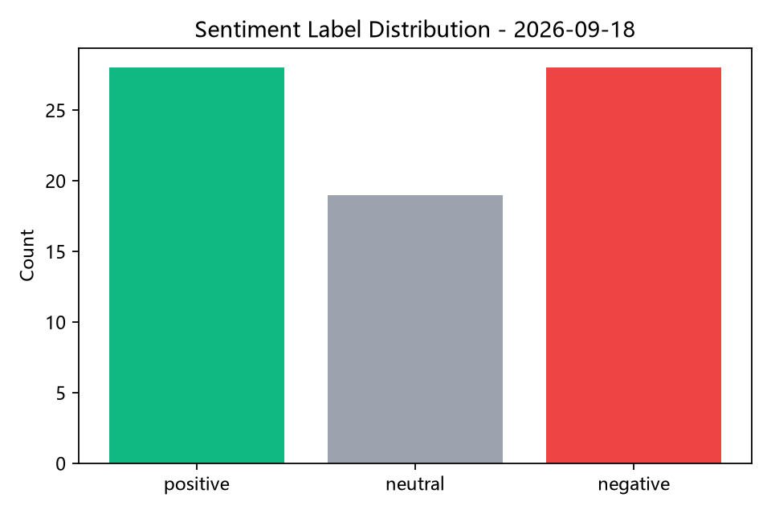
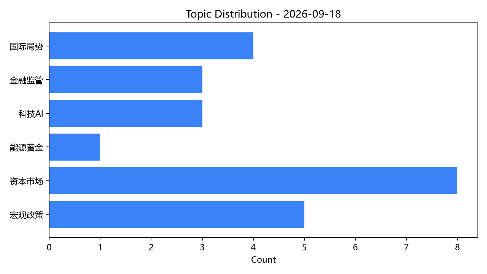
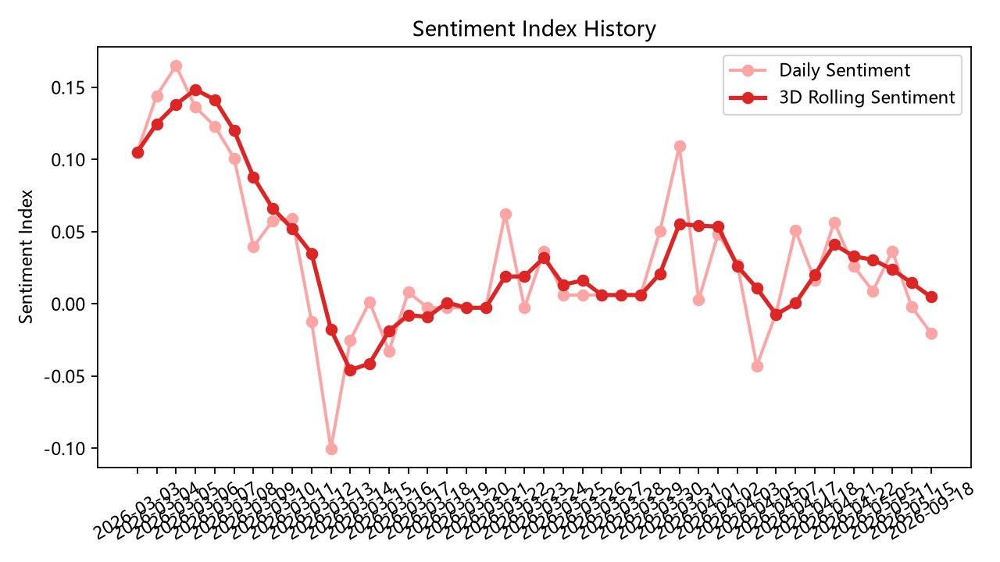
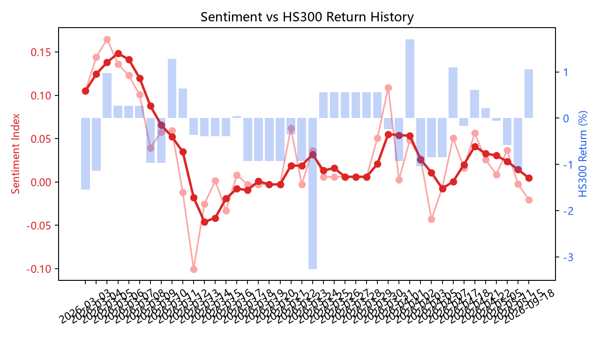

今日新闻情绪整体为中性偏平衡，市场偏弱，关注点主要集中在能源黄金、国际局势。当前更适合作为风险情绪观察，而不是方向性预测。
Today's news tone is Balanced / Neutral with a softer market backdrop. The main attention is concentrated in Energy & Gold, Global Geopolitics. At this stage, the dashboard is more suitable for risk-sentiment observation than directional prediction.
项目定位：用于观察财经新闻情绪与市场联动，不直接作为交易预测信号。
Project scope: designed for observing news sentiment and market linkage, not as a direct trading signal.
当日新闻情绪为中性偏平衡，沪深300与上证指数分别下跌 0.97% / 0.67%，情绪与市场方向大体一致。当前历史样本较短，后续需继续积累。
Daily news sentiment is Balanced / Neutral, while HS300 and SH Index fell 0.97% / 0.67% respectively. News tone and market direction are broadly aligned. History is still short and needs more daily samples.



历史图会随着每日自动运行逐步丰富，目前仍处于样本积累早期。
Historical charts will become more informative as daily runs accumulate. The sample is still at an early stage.

当前更适合作为联动观察面板，而非正式统计结论。
At the current stage, this is better interpreted as an observation panel rather than a formal statistical conclusion.